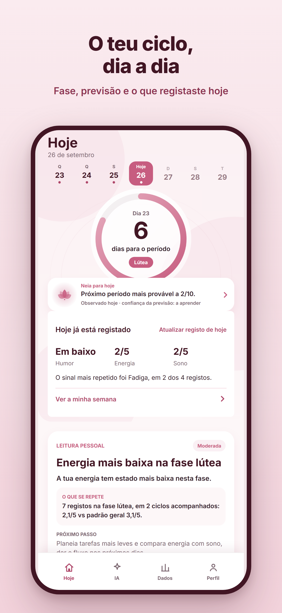
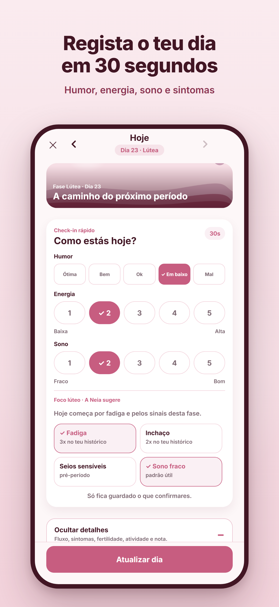
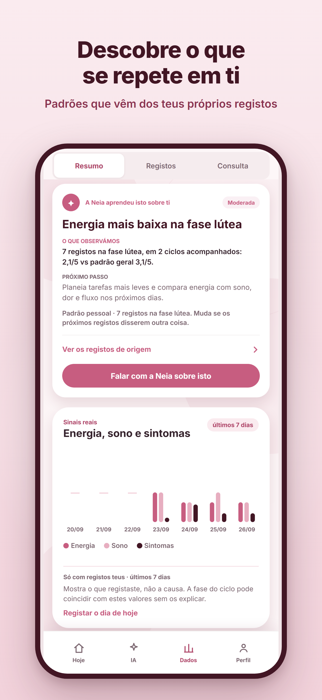
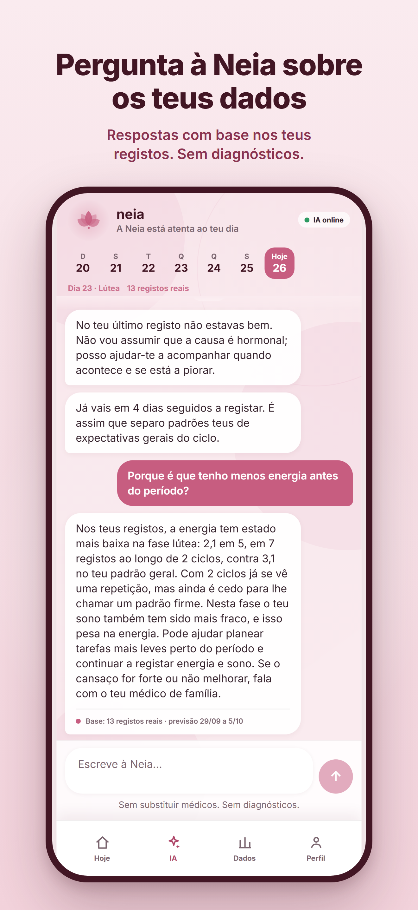
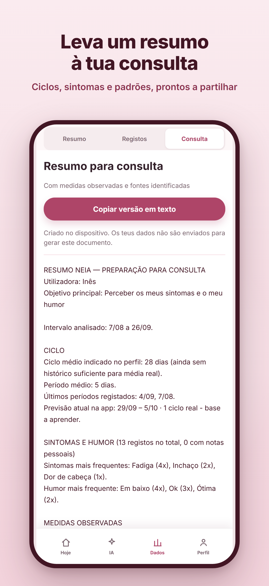

Assistente inteligente de saúde feminina
O teu ciclo.
Finalmente explicado.
A Neia liga datas, sintomas e registos para te mostrar o que sabe, o que estima e porquê.
Sem anúncios. Sem venda de dados de saúde. Sem promessas médicas.
Dentro da Neia
Menos ruído. Mais compreensão.
Tudo começa com uma pergunta simples: o que precisas de saber hoje? Ecrãs da versão gratuita com dados fictícios e uma conversa de exemplo.





Confiança antes de certezas
Uma previsão não é um palpite.
A Neia mostra datas reais, janelas estimadas e nível de confiança em separado. Quando confirmas um período ou acrescentas um registo, a leitura é recalibrada.
- Real
- O que registaste.
- Estimado
- O que o ciclo sugere.
- Explicado
- Os dados usados na leitura.
Privacidade sem letra pequena
Os teus dados são teus.
A Neia usa apenas o necessário para prestar o serviço. Não vende dados de saúde, não mostra anúncios e não usa tracking publicitário.
Ler a política completa ›No teu iPhoneA foto de perfil e a cópia local protegida permanecem no dispositivo.
Na tua contaO acesso aos dados sincronizados é autenticado e separado por utilizadora.
Sob o teu controloPodes consultar, exportar e eliminar os teus dados quando quiseres.
Grátis
Tudo o que vês.
Sem pagar nada.
Sem subscriçãoCiclo, registos, previsões e os teus dados, sem compras dentro da app.
Neia IA incluída100 mensagens por mês, com base nos teus próprios registos.
Sem anúnciosE sem venda de dados de saúde nem tracking publicitário.
Em breve na App Store
Conhece o teu ritmo.
A Neia estreia primeiro em português de Portugal.